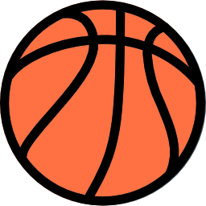

MY HOBBIES
Basketball
I cannot think of any more joyful activity for me than basketball. I started playing basketball at school, when I was very young. Since then basketball has been my most favourite sport. Nowadays I play basketball with my friends no less than two times a week.
Football
If there was not basketball probably I would call football as my favourite sport. My interest in football was sparked by, former Barcelona FC player, Ronaldinho. When I was eight years old I first have seen how he plays the game, and it got me astonished, and made me see the real beauty of football game. Since then I have become a real fan of football and team Barcelona.
Programming

This is my favourite activity when I am tired of playing sport games. Programming helps me to convey my creativity through scripts, algorithms and programs. My primary goal and desire is to create an application that will be helpful for everyone in everyday life.